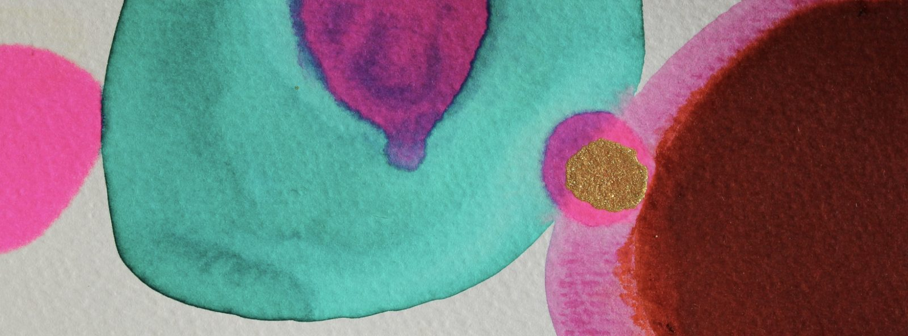

Start / Somatic Experiencing
Somatic Experiencing® (SE)
Mit dem Körper lösen, was Worte oft nicht erreichen
Somatic Experiencing ist ein körperorientierter Ansatz zur Lösung von Stress- und Traumafolgen, entwickelt von Dr. Peter A. Levine. Er ist der Schwerpunkt meiner Arbeit.

Worum es geht
Wenn der Körper wieder zur Heimat wird
Nach überwältigenden Erfahrungen bleibt das Nervensystem manchmal im Alarm. Der Körper reagiert, als wäre die Gefahr noch da, auch wenn der Verstand weiß, dass sie vorbei ist.
Somatic Experiencing setzt genau hier an. Statt das Erlebte zu analysieren, richten wir die Aufmerksamkeit auf das, was jetzt im Körper spürbar ist: Atem, Wärme, Enge, Weite, Impulse. In kleinen Schritten pendeln wir zwischen dem, was belastet, und dem, was stärkt. So kann das Nervensystem seine natürliche Fähigkeit zur Selbstregulation wiederfinden.
Viele Menschen beschreiben danach mehr Ruhe, mehr Lebendigkeit und das Gefühl, wieder bei sich anzukommen.
Warum der Körper?
Verstanden ist noch nicht verändert
Viele Menschen, die zu mir kommen, haben schon viel an sich gearbeitet. Sie können ihre Muster benennen. Trotzdem schlägt der Körper Alarm, bevor der Kopf eingreifen kann.
Das liegt daran, dass Stress- und Schutzreaktionen nicht im Denken entstehen, sondern im Nervensystem. Somatic Experiencing arbeitet deshalb „von unten nach oben“: Wir geben dem Körper Gelegenheit, eine neue Erfahrung zu machen, etwa dass Anspannung kommen und wieder gehen darf. Das Verstehen, das Sie schon mitbringen, bekommt so ein Fundament.
Das kann sich überraschend leicht anfühlen. Oft sind es kleine Momente: ein tieferer Atemzug, warme Hände, ein Lachen.
Wobei es helfen kann
Kleine Schritte, spürbare Wirkung
- Stress und Anspannung
- Verarbeitung belastender Erlebnisse
- Ängste und Unruhe
- wiederkehrende emotionale Muster
- Erschöpfung und Burnout-Vorbeugung
- Schlafprobleme
- Gefühl von Taubheit oder Abgeschnittensein
- Folgen von Unfällen, Operationen, Stürzen
- mehr Körperwahrnehmung und Präsenz
- innere Stabilität im Alltag
Somatic Experiencing ersetzt keine ärztliche Diagnose oder Behandlung. Ob es für Ihr Anliegen passt, klären wir im Erstgespräch.
Und die Kunst?
Als Kunsttherapeutin habe ich gelernt, wie viel ein Bild sagen kann. Wenn es passt, lade ich Sie ein, etwas zu malen oder zu gestalten, um dem, was der Körper zeigt, eine Form zu geben. Ganz ohne Anspruch. Mehr dazu
Ablauf
So läuft eine Sitzung ab
- AnkommenWir beginnen mit dem, was gerade da ist. Sie sitzen bequem, wir sprechen kurz über Ihr Anliegen.
- SpürenIch lade Sie ein, wahrzunehmen, was im Körper geschieht. Sie bleiben dabei bekleidet und im Gespräch; Berührung gibt es nur, wenn Sie es ausdrücklich möchten.
- PendelnWir wechseln behutsam zwischen Belastendem und Stärkendem, damit Ihr System nie überfordert wird.
- IntegrierenZum Schluss nehmen wir uns Zeit, damit sich das Neue setzen kann, und schauen, was Sie in den Alltag mitnehmen.
- Dauer
- 50 Minuten
- Ort
- Praxisraum bei Wismar, Lübsche Straße 71 in Wismar oder online
- Kosten
- 90 € je Sitzung (Selbstzahlerleistung)
- Termine
- nach Vereinbarung, auch samstags
- Meine Ausbildung
- Somatic Experiencing® nach Dr. Peter A. Levine, bei Marinka Gattnar, seit 2023 (laufend).
Lernen wir uns kennen.
Ein erstes Gespräch am Telefon dauert etwa 15 Minuten. Sie erzählen kurz, was Sie bewegt, und wir klären, ob meine Arbeit zu Ihnen passt. Ganz ohne Verpflichtung.